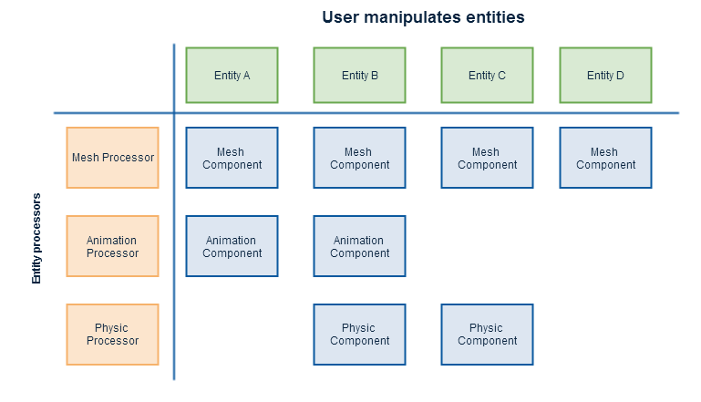

Manage entities
Warning
Приносим свои извинения за неудобства. Для этой страницы нет перевода на русский язык. Она будет отображаться на английском языке.
Warning
This documentation is under construction.
Overview
User usually want to manipulate Component contained in a specific entity, while engine wants to access component by types (i.e. all Mesh Component while drawing, all animation components while updating animations, etc...):

User will add component-based entities into an entity manager.
Engine or user registers entity processors that can process specific entities and/or components.
Entity Processor
To solve this problem, the concept of Entity Processor has been added. An Entity Processor will access Entities that matches specific requirements (i.e. process all entities with MeshComponent) and process all of them in a single update function. This allows for greater efficiency and cache-friendliness, as there is no need to check every entity/components many times per frame.
This approach also solves many update order dependencies issues (just need to order the entity processors updates properly).
Here is some examples of entity processors:
@'Stride.Engine.TransformationProcessor': Compute transformation matrices from hierarchy and local transformation stored in @'Stride.Engine.TransformationComponent'.
As a result, EntityManager can be used as a hierarchical scenegraph instead of a simple entity list.
@'Stride.Engine.MeshProcessor': Add Model to rendering.
@'Stride.Engine.LightProcessor': Collects and update lights, and transfer it to rendering system. It can hides implementation details (deferred or forward rendering, etc...)
Entity System
Entity are grouped together in an EntityManager. It will also contains the list of entity processors. When an entity is added or an entity components changes, it will ask entity processors if they should be included.
// Add an entity:
var myEntity = new Entity();
engine.EntityManager.AddEntity(myEntity);
// Iterate through added entities:
foreach (var entity in engine.EntityManager.Entities)
{
Console.WriteLine(entity.Name);
}
EntityManager can be used to enumerate its Entities (ref:{Stride.Engine.Entity}). Note that children of a given entities will also be in this list.
To manipulate entities as a scenegraph, refer to @'Stride.Engine.TransformationComponent' class.